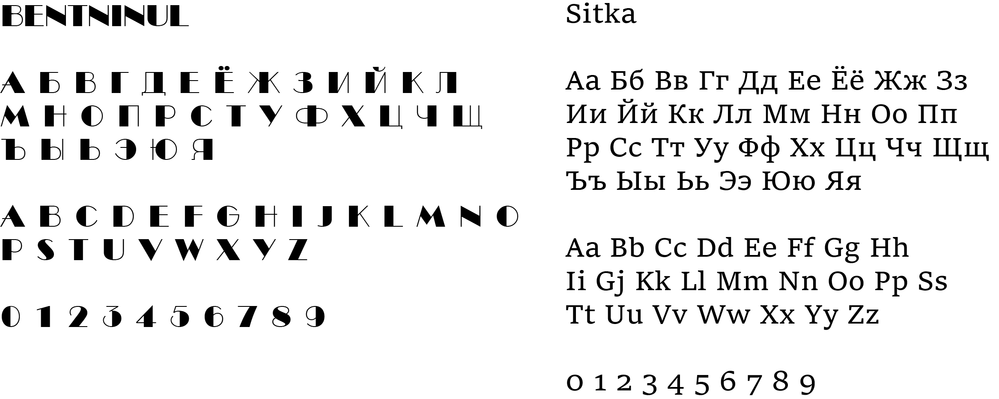

3.14sarevi4 design
← назадТоп-Модель Н&А
коммерческий проект
Конкурс "Топ-модель Н&А" представляет собой свежий и легкий подход к понятию красоты. Он основан на идее уверенности в себе и призывает каждого участника обнаружить молодость, которая пребывает внутри каждого - будь то пятилетний ребенок или семидесятилетний взрослый.
Конкурс вдохновляет участников на самовыражение и признает, что красота для каждого своя и небывает неспиматичных людей.
Визуальный стиль конкурса отличается воздушным дизайном, который передает легкость и свежесть. Графические элементы и цветовая гамма создают атмосферу легкости и элегантности, что соответствует духу соревнования.
Логотип
Цвета
Шрифты

Афиша